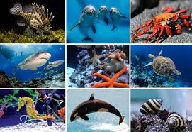
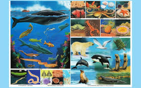
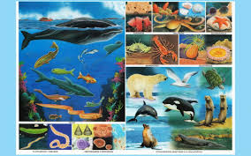

animales que viven en el agua durante toda o la mayor parte su vida. El término se aplica tanto a los que viven en agua dulce como en salada.El mar es una porción de agua salada de tamaño inferior al océano. Es el conjunto de agua que cubre la mayor parte de la Tierra. Los mares (junto con los océanos) ocupan un 70% de la superficie terrestre.
 
